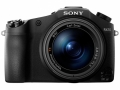

器材库 > 不可换镜头数码相机 > DSC-RX10

规格总览
发布日期
2013-10-16
影像规格
影像传感器
Exmor R CMOS
影像传感器尺寸
13.2mm x 8.8mm
有效像素
2020万
影像处理器
BIONZ X
静态图像格式
JPEG, RAW
静态图像尺寸
[3:2] 5472×3648, 3888×2592, 2736×1824 [16:9] 5472×3080, 3648×2056, 2720×1528 [4:3] 4864×3648, 3648×2736, 2592×1944, VGA [1:1] 3648×3648, 2544×2544, 1920×1920 [扫描全景]宽尺寸 12416×1856, 5536×2160 标准尺寸 8192×1856, 3872×2160
画幅比
3:2, 4:3, 16:9, 1:1
短片格式
MP4, AVCHD 2.0
短片尺寸
AVCHD：28M PS（1920 x 1080，60p/50p）/24M FX（1920 x 1080，60i/50i）/ 17M FH（1920 x 1080，60i/50i）/24M FX（1920 x 1080，24p/25p）/ 17M FH（1920 x 1080，24p/25p）; MP4：12M（1440 x 1080，30fps/25fps）/ 3M VGA（640 x 480，30fps/25fps）
防抖系统
[静态影像] 光学防抖 [动态影像] 光学防抖增强模式
镜头和对焦
镜头结构
14片/11组
非球面镜片
7片
等效35mm画幅焦距
24mm-200mm
最大光圈
f/2.8
光学变焦
8.3倍
最近对焦距离
广角3cm, 长焦30cm
对焦模式
AF-S / AF-C/DMF/MF
曝光控制
测光模式
中央重点测光, 多分区评价测光, 点测光
场景模式
肖像 / 动作防抖 / 运动 / 微距 / 风景 / 黄昏 / 夜景 / 手持夜景 / 夜景肖像
快门速度
智能自动（4秒 - 1/3200秒）/程序自动 （1秒 - 1/3200秒） / 光圈优先（8秒 - 1/3200秒）/快门优先（30秒 - 1/3200秒）/ 手动曝光（B门，30秒- 1/3200秒）
曝光补偿
±3EV以1/3EV级调整
ISO感光度
160, 200, 320, 400, 640, 800, 1000, 1250, 1600, 2000, 3200, 6400, 12800, 250, 500, 2500, 125, 4000, 5000, 8000, 10000
白平衡
日光, 白炽灯, 闪光灯, 阴天, 自定义, 阴影, 自动, 荧光灯（冷白色）, 荧光灯（日光白色）, 荧光灯（日光）, 荧光灯（暖白色）, 色温/滤光片
自拍
10秒, 2秒, 关闭
连拍
最快约10张/秒
拍摄模式
程序自动 / 光圈优先 / 快门优先 / 自动（智能自动/增强自动）/ 手动曝光 / 调出存储 / 动态影像（程序自动/光圈优先/快门优先/手动曝光）/ 场景选择 / 扫描拍摄
闪光灯
内置闪光灯
弹出式
闪光模式
自动, 慢速同步, 强制闪光, 无线遥控, 禁止闪光
闪光涵盖范围
ISO 自动 约1.0m to 10.2m；ISO 约12800，20.4m以下
取景规格
取景器
电子取景器
取景器像素
144万
LCD类型
Xtra Fine LCD
LCD尺寸
3.0英寸
LCD像素
123万
LCD特性
翻转屏
亮度调节级数
自动 / 手动 （5 档）/ 晴朗天气
文件输入/输出
存储卡
MS/MS PRO记忆棒, SD/SDHC, SDXC
数据接口
USB2.0
视频/音频接口
MIC 输入, Micro HDMI 输出
无线功能
Wi-Fi
配件端口
热靴
电源
电池
NP-FW50
续航能力
[静态影像] 约 340 / 170 分钟 （取景器）， 约420 /210分钟（LCD） [动态影像] 约 70分钟（ MP4 12M 模式）
外接电源
支持USB接口充电
外观
颜色
黑色
尺寸
129.0 x 88.1 x 102.2mm
重量
（含电池与记忆棒）约813g / （仅主机）约755g
其它
附件
可重复充电电池NP-FW50，电源适配器AC-UB10 ，Micro USB 连接线，肩带，镜头盖，热靴盖，遮光罩，使用说明书
浪仙2016-02-22 17:144.25 分
操作性 4.00功能性 4.50美观性 4.50趣味性 4.00耐用性 4.50性价比 4.00解像力 4.50色彩还原 4.00
我是阿弯2014-03-14 22:554.5 分
操作性 4.50功能性 4.50美观性 4.50趣味性 4.50耐用性 4.50性价比 4.50解像力 4.50色彩还原 4.50
产品图 / 样片
DSC-RX10
评测 / 相关文章
- 详细内容 （存档）
- 黑卡家族的中坚力量-RX10测评 （存档）
- ［试用］索尼RX10相机实拍样片 （存档）
- ［试用］海外简评：索尼DSC-RX10 （存档）
- ［资讯］索尼秋季新品发布会现场集锦 （存档）
- ［资讯］索尼黑卡RX10外观图赏 （存档）
相关文章
- ［试用］索尼RX10相机实拍样片 （存档）
- ［试用］黑卡家族的中坚力量-RX10测评 （存档）
- ［试用］海外简评：索尼DSC-RX10 （存档）
- ［资讯］索尼DSC-RX10 （存档）
- ［资讯］索尼秋季新品发布会现场集锦 （存档）
- ［资讯］索尼黑卡RX10外观图赏 （存档）